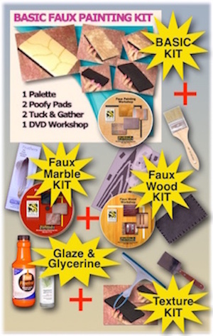

Having trouble with paint color I chose for my walls
I'm having trouble with my situation and was hoping you could help. I have some questions that the video doesn't answer.
You can't beat this!

Colossal Extreme Faux Painting Combo
Only *$175.99
FREE PRIORITY SHIPPING
Includes Basic DVD kit
My current base color is ValSpar Swelter (code EE2073C), I've attached a picture of it so you can see. Do I need to start over with an off-white base coat or is there a color you can suggest to apply to the palette that would lighten up the boldness of the yellow and avoid me having to start over with a new base coat? I wouldn't mind the more yellow hue of the swelter, but I need to contrast it with something a little lighter. Also, should I be using glaze or regular paint to apply to my palette? With regards to testing different colors: do places like home depot allow you to purchase small amounts of paints/glazes so you can take them home and test against your base coat, or do you have to buy a quart every time and thus maybe waste money?
Thanks in advance for any help you may be able to provide!
Sincerely,
Matt
Dear Matt,
As for your questions, the answer is beneath each one:
Q. Do I need to start over with an off-white base coat or is there a color you can suggest to apply to the palette that would lighten up the boldness of the yellow and avoid me having to start over with a new base coat?
Paint a poster board with your base coat to test with. Buy a gallon of glaze, any kind. We use Floetrol but it doesn't have as much "open time" as the others. Your color is very bright so you will have to test out our suggestions with a few colors. Sherwin Williams has a quart of paint called "Color to Go" for about $5. I don't believe Home Depot can match the price. In addition, since these are colors we can see in sample form, it will be easier to guide you. Even spending up to $15 on paint will be worth it if you don't have to paint over the basecoat. You will not need to buy more paint to finish the walls. One quart is enough.
Try SW 6108 Latte first. Use 4 parts glaze to 1 part paint. If it is too light, use a little more paint. Make sure you dry the board with a hair dryer before you make your decision if it's right. The glaze darkens when it is dry.
Then if you don't like it, try SW 6076 Turkish Coffee and lastly, try SW 1070 Fox Fire. Just give Sherwin Williams the number and they have it on their computer.
Q. Also, should I be using glaze or regular paint to apply to my palette?
Use a glaze. Paint will be opaque and for that matter, you might as well paint over. If these ideas don't work, you will have to paint over and use the colors on the E-Book for the Old World.
Q. But I need to contrast it with something a little lighter
Faux Painting will always make it darker unless you are using straight paint and sponging or ragging on. You can always add a little white to your basecoat paint itself to lighten the color and then sponge it over the walls but I believe you wanted the Old World look, though.
Hope this helps. We will be praying for you.
God bless,
Support Team
Murals and Faux Painting, Inc.
Hi, thank you for your help and suggestions. I tried the latte with the yellow base coat and a light tan base coat - on two different poster boards. I'm waiting for them to dry so I can judge. I was wondering if you had any tips on applying the paint with the palette?. When I applied the palette to the poster board and pressed down firmly it left a mark that the poofy wouldn't spread out. So my tests have areas that almost have the rectangular outline of the palette tool. I don't know, i didn't use much paint. Should I use more paint? Should I not press so firmly? Any ideas?
Also, how long will the poofy and palette last? I might end up doing quite a lot of testing before I decide. Will frequent washings make them unusable?
Thanks again!!
Matt
Hey Matt,
I appreciate your patience in your project. That's how it is with faux painting sometimes. What glaze did you use? Just press the palette once and pounce out the colors. What might be happening is that the glaze is drying too fast. You may need more open time. I add an acrylic extender (buy at Michaels or Walmart in the acrylic paint department) or glycerin. I forgot to ask if your basecoat is flat or satin. If it is flat then you definitely will need to add lots of extender or glycerin. If this is the case, then press the poofy onto the palette and then onto the wall. Wash the wall with the poofy and then pounce out the swirls as quickly as you can. On the DVD, it states you should faux on satin finish. It is usually impossible to faux paint on top of flat finish.
The tools will last up to 6 to 10 uses, if you take care of them. Never leave them out for more than 20 minutes if you are not using them. Always place them in a plastic bag when not using. Glazes dry longer than paint, but eventually they do dry and that is what will ruin the tools. Hope this helps.
God bless,
Support Team
Murals and Faux Painting, Inc.
Hi Sandy, sorry for the late response. I actually postponed the project for a few days as I have been really busy with work. I did try the turkish coffee at about a 4:1 ratio. I can't give you the name of the glaze right now because I am at work, but it was the only glaze at the SW store. I paid about $35 for it. The turkish coffee result was too dark, so my next step will be to try a 2:1 ratio and see how I like that. If I just can't get it right, I did see a SW color that will do for my base. It's called Goldfinch. I might end up just using that and give up the faux attempt. I am just being patient and taking my time. I really do apprecaite your help and obvious concern for the success of my project :)
I'm sure once I start again (probably tomorrow) I will have another question or two for you.
Thanks,
Matt
Dear Matt,
So glad you wrote. I like seeing my customers succeed in their faux painting endeavors; that's why I have followed up. You will need to add more glaze and less paint, so your ratio should be 6 parts glaze and 1 part paint. The ration of 2:1 will make it darker. Some glazes have a shorter open time and that could be part of the problem with the imprint of the palette showing on the walls. Try this on a board - press the poofy onto the palette and then onto the wall and literally wash the wall, pouncing out the swirls you might get. Feather out the right side as you will butt up the next section to it later. Work going down so you don't have to feather out the bottom, just keep doing the same thing. This might give you more working time. Let me know how it goes. If you want to try another color and not spend the money on more latex paint, you can get a small bottle of craft paint from Plaid for about $1.00 at Walmart or Michaels. It's called Apple Barrel and the color is Nutmeg Brown. That would give you more of a golden brown faux finish. You can always add a little water to the glaze, too, if you need more open time.
I am sure you will get the result you want cause you have a very needed virtue needed in faux painting...patience.lol
God bless,
Sandy Silva